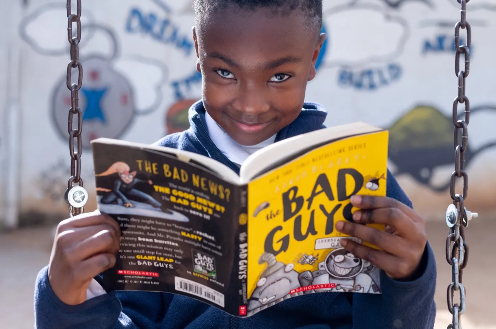
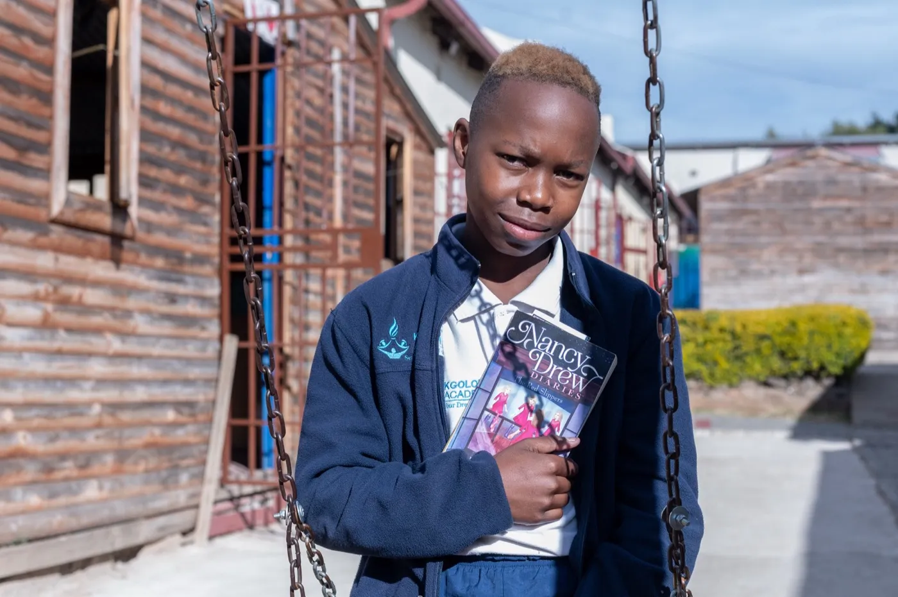
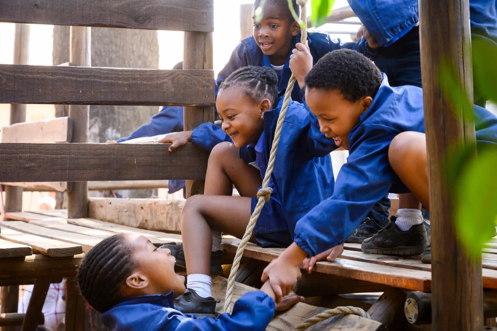
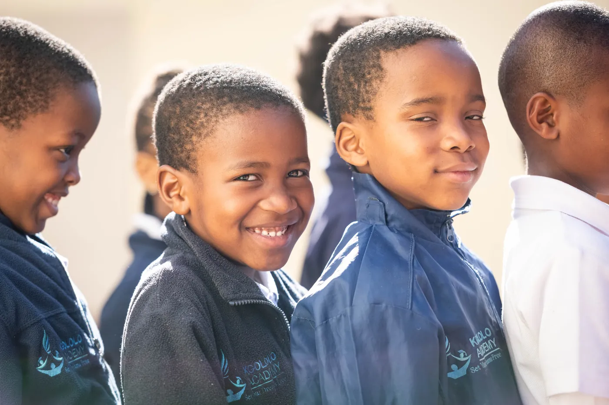
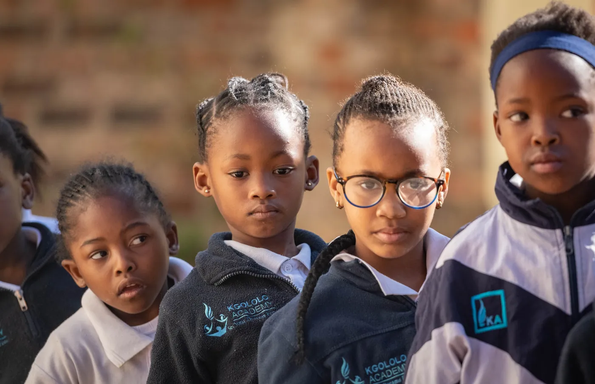

01
Extended School Day
All learners, Grades 1–7
Children spend 25% more time in class than at most South African schools. That leaves room for art and physical education alongside a rigorous academic curriculum.
A low-fee independent primary school giving children in Alexandra, Johannesburg, a world-class education within their own community.
25%
more teaching time than most South African schools every school year
About this partner
Kgololo Academy serves children in Grades 1 to 7 in Alexandra, Johannesburg, combining a longer school day, strong teaching, dual-language learning in isiZulu and English, and close partnership with families.
Kgololo Academy opened in 2015, co-founded by Waahida Tolbert-Mbatha and Alexandra native Thulani Mbatha. In Alexandra, fewer than 30% of learners who finish high school earn the pass needed to enter university, compared with 99% in Johannesburg's wealthier suburbs. Our founders believed children shouldn't have to leave their community to get a world-class education, so we built one there. We drew on successful US schools such as KIPP and adapted their practices to South Africa. Our name reflects that belief: Kgololo means "to set free" in Setswana.
Today Kgololo Academy is a full primary school for Grades 1 to 7. We offer an extended school day with art and physical education, dual-language teaching in isiZulu and English, and weekly professional development for every teacher. A school social worker supports children and families. Parents are close partners: they volunteer, attend regular learning events and sit on the school board. Families contribute half the cost of their child's education, and the rest is raised from donors.





01
All learners, Grades 1–7
Children spend 25% more time in class than at most South African schools. That leaves room for art and physical education alongside a rigorous academic curriculum.
02
All learners, Grades 1–7
Children learn in both isiZulu and English, in classrooms where their culture, language and life experiences are valued. They are encouraged to think critically and to question injustice.
03
Teachers
Every teacher receives close to 300 minutes of classroom observation, feedback and training each week. This keeps the quality of teaching improving in every classroom.
04
Parents and guardians
Every family commits to volunteer hours. Parents join regular meetings, parent–teacher conferences, and maths and literacy events that show them how to support their child's learning at home.
05
Children, families and staff
A school social worker supports children, parents and teachers through trauma, family challenges and everyday worries, so that difficulties at home don't stand in the way of learning.
Even Ground's support contributes to Kgololo Academy's ongoing operations.
Support Even Ground
Donations are made to Even Ground and help fund community-led programs like Kgololo's across South Africa. Even Ground is a US 501(c)(3); contributions are tax-deductible.